Brandon D'Adam
Back To Portfolio
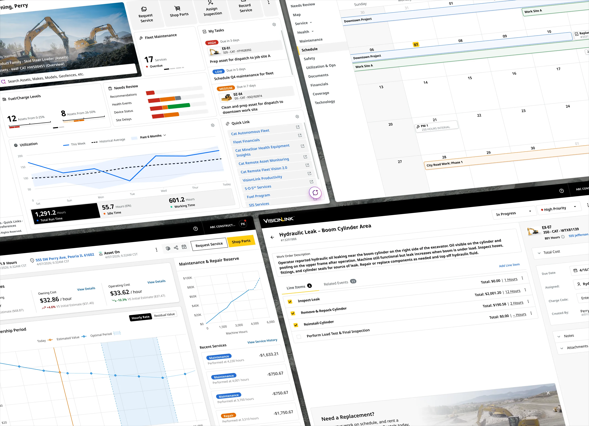
Over the past few years, I’ve worked as a lead designer on the VisionLink™ platform, balancing product delivery with operational leadership. During that time, I helped the product evolve from a basic telematics tool into a unified platform for construction, mining, and other heavy equipment industries. When I joined the team in 2022, the product was in the middle of a major rewrite. There was no central design system, files were fragmented across Sketch and Figma, the feature set had unclear customer value, and a small team was operating without clear standards, design ops, or a shared product vision.
I started by stabilizing what already existed. I retrofitted a design system from production code and gradually reestablished consistency across Figma files, web, and mobile applications. This reduced rework, cut down redundant alignment meetings, and created a more reliable foundation for the team. I also introduced lightweight workshops to help align ideas and improve collaboration, while speeding up decision-making processes.
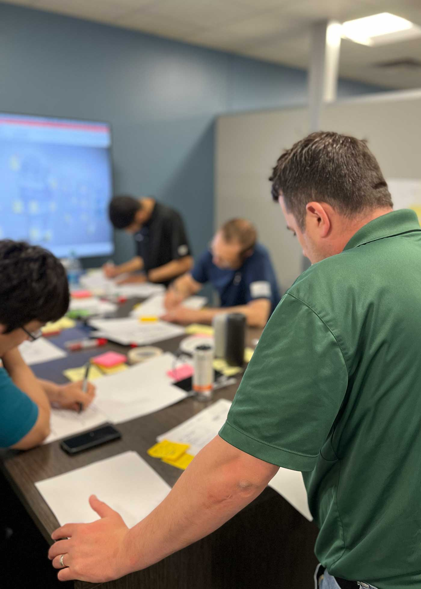
Beyond stabilizing the foundation, I focused on improving design operations so designers could spend more time on craft rather than coordination. I introduced a Figma Ops approach that standardized how the team works within our tools, strengthening collaboration between product and engineering while improving the reliability of design-to-development handoffs.
Additionally, after supporting several large-scale deliveries, I also worked backwards to understand why those efforts succeeded, uncovering the informal processes that moved projects from an initial business request to a well-defined user experience for our team. I documented these patterns and shared them with the team as a kickoff framework, establishing clearer expectations with product partners and raising the baseline quality across our design team, allowing junior designers to kick off and run projects just as effectively as seniors.
Alongside these improvements, I maintained a high level of product delivery across several large initiatives. I led design efforts for complex fleet management capabilities such as fleet scheduling and asset planning, and contributed to the redesign of key platform surfaces including overview pages, dashboards, and navigation and information architecture patterns. I also supported broader company growth initiatives by facilitating workshops and workflow explorations that aligned multiple product teams and stakeholders around shared goals. Together, these efforts helped evolve VisionLink from a basic telematics tool into a more capable operational platform for heavy equipment industries.
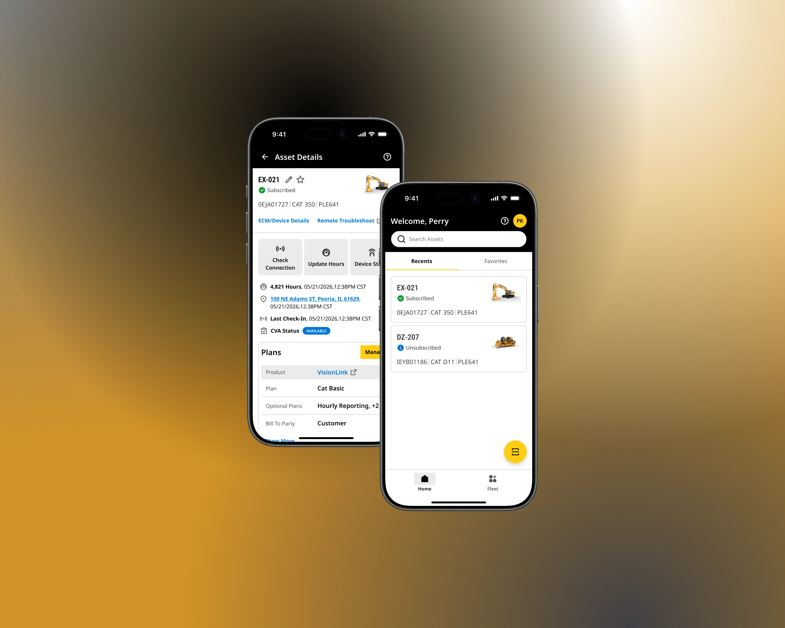
In 2022, I was brought onto the Dealer Services Portal (DSP) team to redesign their mobile application. It was a legacy product initially launched in 2016 that had seen minimal updates over the years. While the product team had already identified usability issues and workflows in need of improvement, the overall experience lagged behind newer Caterpillar mobile apps in both UI quality and consistency.
When I joined, DSP Mobile faced a familiar problem inside large organizations: mobile patterns and standards did exist across teams, but they weren’t documented, centralized, or easy to reuse. As a result, redesigning DSP in isolation risked creating yet another one-off solution rather than improving the broader mobile ecosystem at Cat.
Rather than starting with screens, I focused first on alignment. I established regular touch points with other Cat mobile designers to understand the patterns they were already using and the constraints they were working within. Working closely with other mobile leads, I collected existing components and interaction patterns, and translated them into Caterpillar’s first centralized mobile UI library in Figma. Through ongoing design reviews, we validated patterns together to ensure they were practical, scalable, and usable across multiple apps.
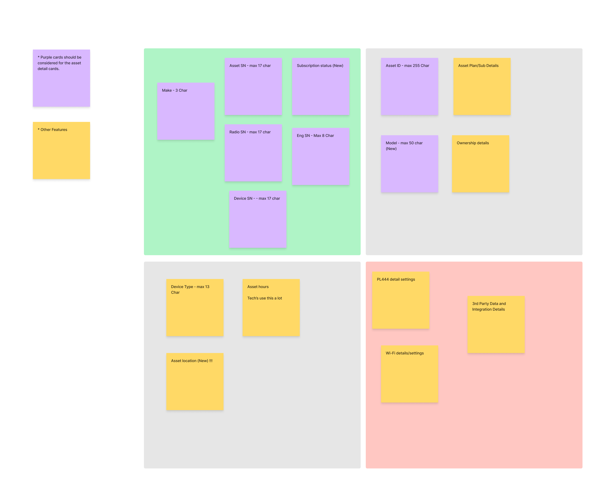
In parallel, I partnered with the DSP product team to rethink the app’s structure by mapping legacy features alongside new enhancements, clarifying which areas required simple visual updates vs deeper UX work. For priority workflows, I led journey-mapping exercises that revealed product tension: product teams wanted to surface as much data as possible, assuming users needed everything at once. To evaluate if our end users actually needed such complex workflows, I facilitated workshops to organize content into clear primary, secondary, and tertiary priorities based on the end-user’s tasks. This alignment helped the interface stay focused on what users needed in the moment, reduced repeated debate between design and product, and kept the UI clean while still supporting complex use cases.
The result was more than a refreshed app. DSP Mobile received a modernized UI aligned with Caterpillar’s evolving mobile standards, improved information architecture, and streamlined workflows that reduced time to complete core tasks. Usability improvements led to fewer support tickets, increased adoption, and improved app store ratings for a previously stagnant product. Beyond DSP, this work established Caterpillar’s first mobile-focused design system, enabling teams to move faster, reduce duplication, and deliver more consistent mobile experiences across the organization.
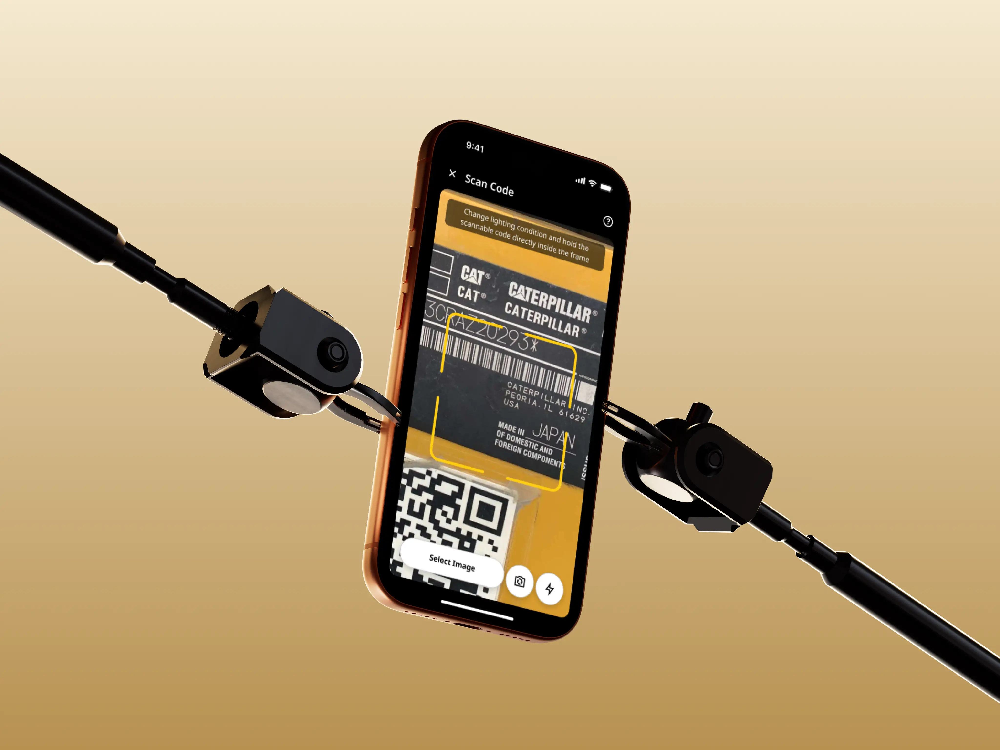
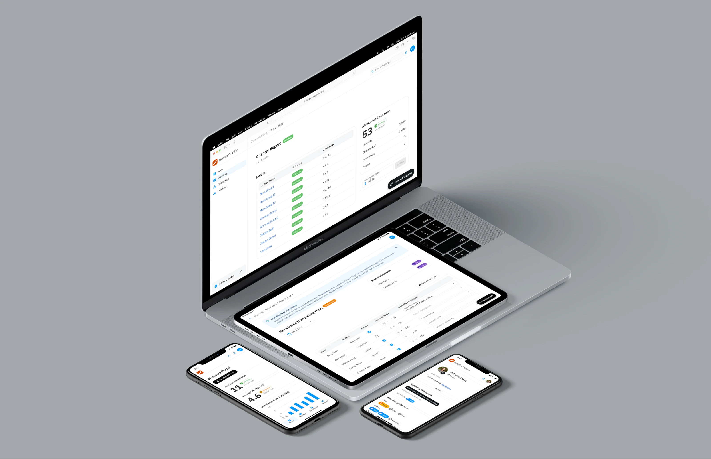
In 2022, I worked with Freedom That Lasts, a nonprofit for faith based addiction recovery, as they transitioned from a long-standing paper-based system to a digital platform that they would call the Freedom Tracker. The goal wasn’t just modernization, it was to make it easier for churches to manage chapters, support participants, and scale the program without losing the personal, human care that defined it. The challenge was significant: many chapter organizers were older and hesitant to adopt new technology, while some participants had limited access to devices or even struggled with reading. Any digital solution had to be inclusive, flexible, and deeply empathetic to these realities.
Rather than jumping straight into design, I focused first on understanding the real pain points behind the paper system. I worked closely with the Freedom That Lasts team to surface assumptions, then interviewed chapter organizers across multiple churches to evaluate them. These conversations revealed consistent issues: lost information, difficulty tracking milestones, and increasing strain as chapters grew. Using these insights, I shaped the platform’s information architecture around real workflows, giving both the team and stakeholders confidence that the system would actually support adoption rather than resistance.
With a validated foundation in place, I led wireframing and usability testing, paying special attention to edge cases and accessibility concerns. We designed workflows that allowed advisors to manage information on participants’ behalf, ensuring the platform could serve people regardless of their access to technology. By grounding every decision in research and continuously testing assumptions, we were able to move quickly without sacrificing trust or clarity.
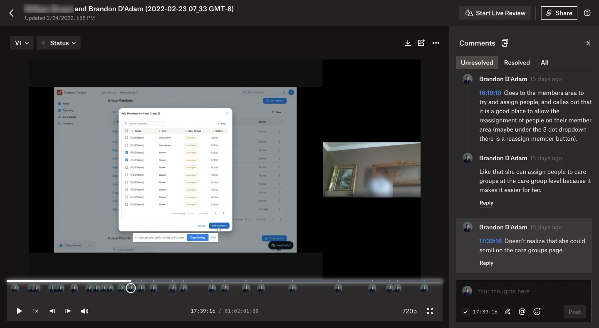
The result was a platform that simplified chapter management, reduced administrative burden, and made it easier to launch new chapters. Church chapters gained confidence in the information they were tracking, the organization gained visibility through analytics, and participants gained a more connected and transparent experience by making milestones visible and community support more tangible. This project reinforced for me how thoughtful research and inclusive design can help technology quietly disappear into the background, and allow people to focus on what matters most: supporting one another through meaningful change.
As someone who isn’t religious, working on a faith-based project was a new experience for me. I was upfront about this with the Freedom That Lasts team early on, wanting to be transparent about any potential gaps in perspective. What quickly became clear, however, was that shared empathy mattered far more than shared belief. Having grown up around people struggling with addiction, I understood the human weight behind the problem, even if I approached it from a different place. Seeing how faith was used not as dogma but as structure, accountability, and hope was eye-opening, especially in areas where more traditional programs often fall short. Playing a role in helping Freedom That Lasts reach more people reinforced for me that good design starts with listening, respect, and meeting people where they are.
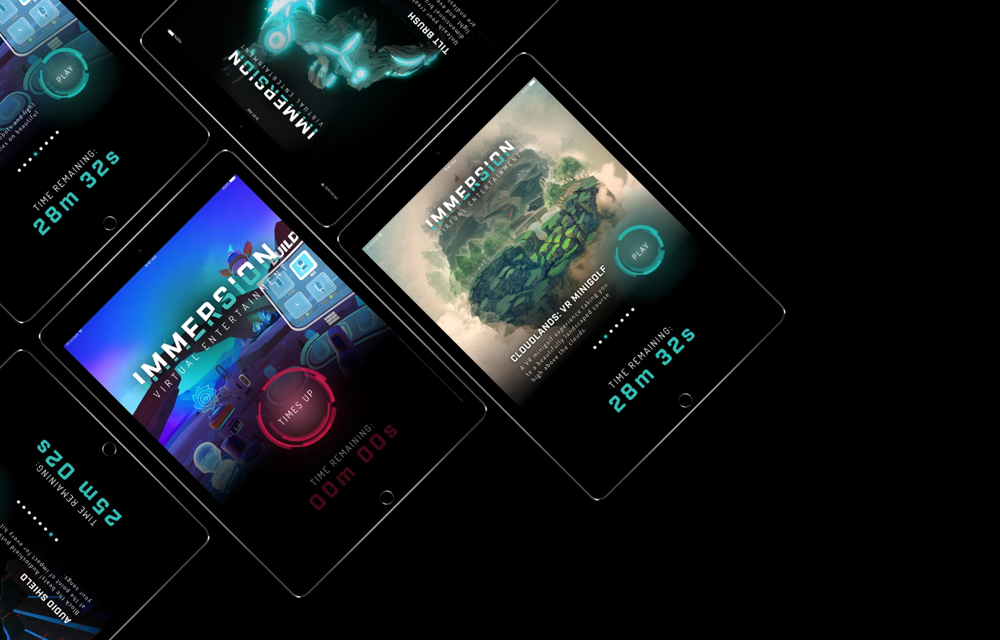
In 2017, I worked with the Abbey Resort to design the end-to-end experience for their Immersion VR Arcade, a resort attraction intended to reimagine what a traditional arcade could be using emerging virtual reality technology. At the time, the resort was experiencing lower demand during colder months and had identified its outdated indoor amenities as contributing factors, particularly their aging arcade. The opportunity wasn’t just to introduce VR, but to create an experience compelling enough to draw guests in year-round.
The challenge went far beyond designing an arcade interface. Guests needed a simple, self-serve way to pay and play, but the experience depended on a complex ecosystem of hardware and software: payment scanners, kiosks, VR headsets, backend systems, and displays, all of which had to work together seamlessly. Because VR arcade cabinets didn’t yet exist, the team and I began by deeply understanding these technical constraints, meeting daily with engineers to identify usability risks early, while collaborating with the Abbey Resort to address operational concerns around payment flexibility, long-term maintainability, and minimizing ongoing support costs.
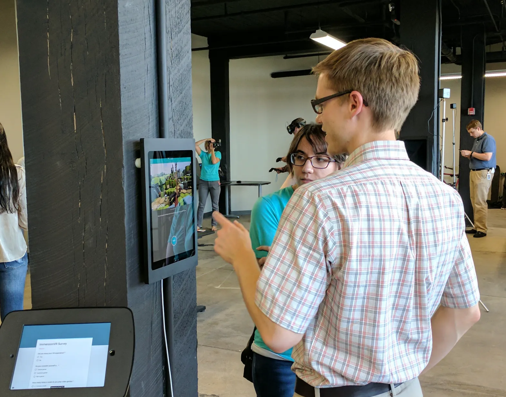
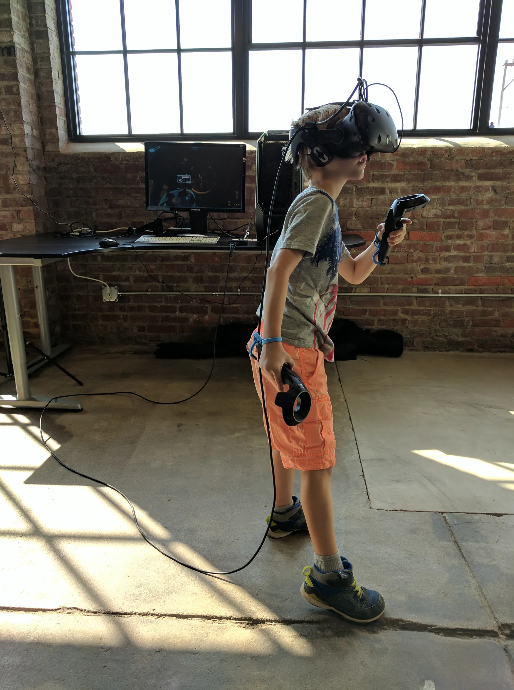
To evaluate the system and designs under real-world conditions, I led usability testing that simulated a high-traffic resort environment, where a key insight emerged: the experience was far more engaging when others could watch what the player was seeing. Mirroring gameplay onto external displays transformed the space, preserving the social, communal energy that defined classic arcades and leading us to add dedicated screens at each station.
The final result was a VR arcade that was intuitive enough for children to use independently, expressive enough to feel special, and robust enough to operate with minimal staff involvement. The resort saw strong guest engagement year-round, particularly in the winter months, and after the initial installation period required virtually no support. Nearly eight years later, the arcade remains in use, still feeling modern and relevant. The project also reinforced an important lesson for me: new technology shouldn’t replace nostalgia, it works best when it builds on it. The additional displays showing live gameplay weren’t originally planned or budgeted, but testing revealed how critical they were to the experience. By designing for both players and spectators, we preserved the social energy of classic arcades while pushing the format forward in a meaningful way.
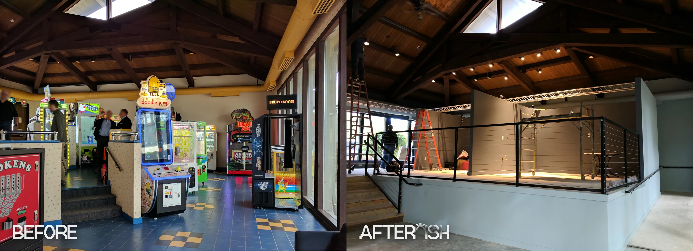
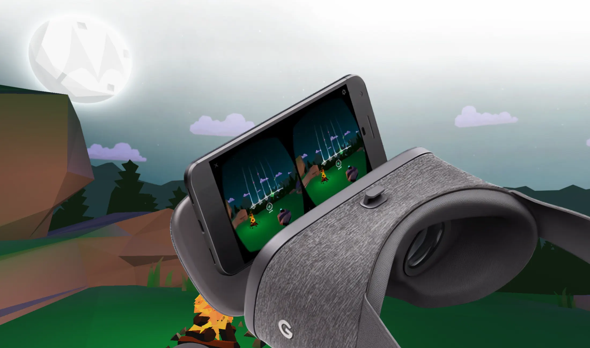
In 2017, while working at Onefire, the team and I partnered with Motorola to design HelloMoto VR, an early Google Cardboard app created to train cell phone carrier sales reps ahead of the Moto Z2 launch. Barely two months before the Z2’s release, Motorola’s marketing team uncovered a key insight: when customers shop for smartphones, they either buy an iPhone or purchase whatever Android device a sales rep recommends. This led to the hypothesis that if sales reps genuinely enjoyed learning about the Moto Z2, they’d be more likely to recommend it over other Android devices. The challenge was timing. This insight surfaced late, leaving just 4-5 weeks to design and ship a fully functional VR experience on the Google Play Store.
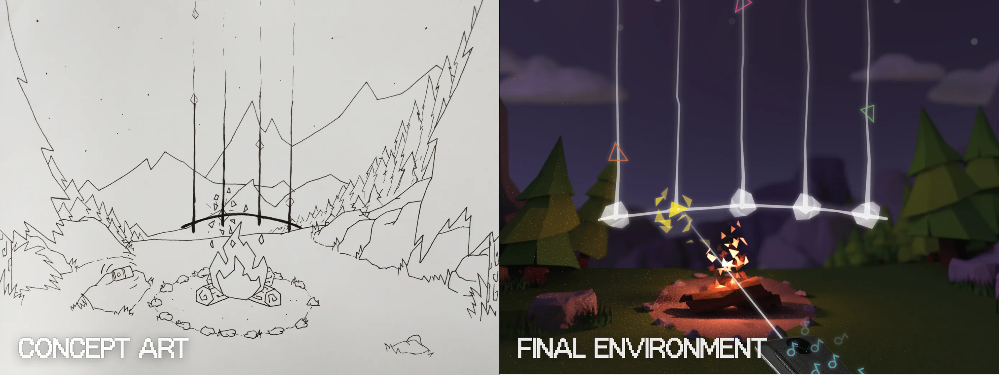
I stepped in as both design and creative lead, as well as project manager, to keep the project moving under extreme time pressure. Rather than rushing straight into production, I structured the work into three tightly focused one-week sprints, each with clear goals. I owned sprint planning, timelines, and client communication, using frequent check-ins and stand-ups to unblock decisions quickly. I also made the call to bring in contract support for 3D modeling and sound design. My goal was to protect the team’s ability to stay heads-down and execute, while ensuring we had the resources needed to deliver at a high level. We worked so efficiently that we were ultimately able to go beyond the original scope and add additional refinement.
Creatively, I worked closely with my team to rapidly explore concepts, make key decisions around game mechanics, and define the overall environment and UI design. I was also responsible for integrating client feedback, and helping shape the experience to match Motorola’s brand energy at the time (playful, expressive, and bold) which influenced mechanic ideas, sound design, and UI interaction. I also worked directly with engineers in Unity to ensure interactions felt intuitive and responsive, while facilitating collaborative sketching and white boarding sessions to refine core game mechanics and finalize aspects of the 3D environments. This combination of creative direction and hands-on execution allowed us to deliver a memorable, high-quality VR experience in just four weeks.
The result was a first of its kind VR training experience that sales reps loved. Although the HelloMoto VR training rollout was limited to just Verizon sales reps, the impact was clear: Verizon sold nearly twice as many Moto Z2 devices as all other carriers combined, and the Z2 became Motorola’s top-selling Z-series phone. For me, the project reinforced how strong alignment, clear structure, and experiential design can turn even extreme constraints into an advantage.
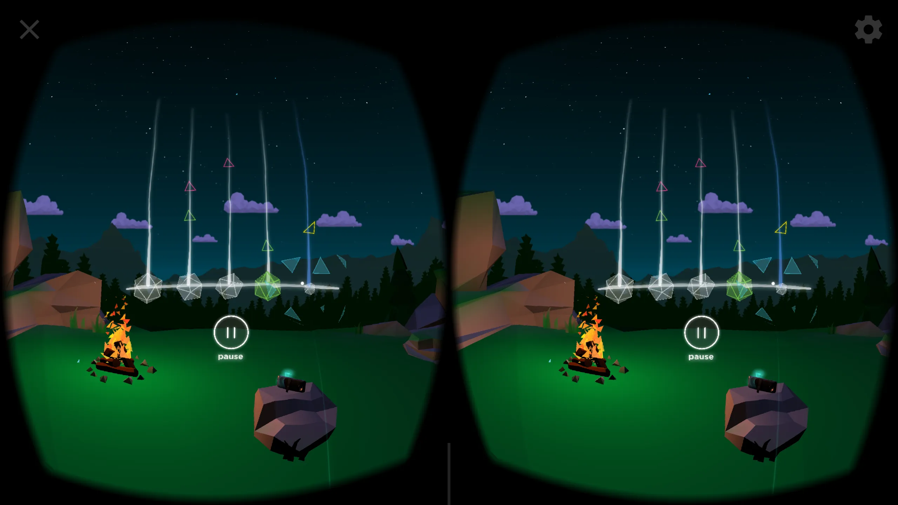
I’ve always wanted to build custom cars and motorcycles, and 2023 I bought a stock 2014 Harley-Davidson Sportster Forty-Eight. For those unfamiliar, the Forty-Eight is a now-discontinued Sportster model, known for its 1200cc air-cooled Evolution V-Twin engine, stripped-down styling, and chunkier tires. This bike became my first real opportunity to express my long desired creativity to build my own custom vehicle.
When approaching a build like this, I wanted to lean into my personal tastes and preferences, which tend toward analog, retro-inspired machines that connect the rider to the road in a raw, mechanical way… something modern vehicles are drifting farther away from. Harleys typically do a pretty good job of this already with their intentionally mistimed engines and balance of comfort and road feel. But with this build, I wanted to push further into that by exposing more of the bike’s raw elements.
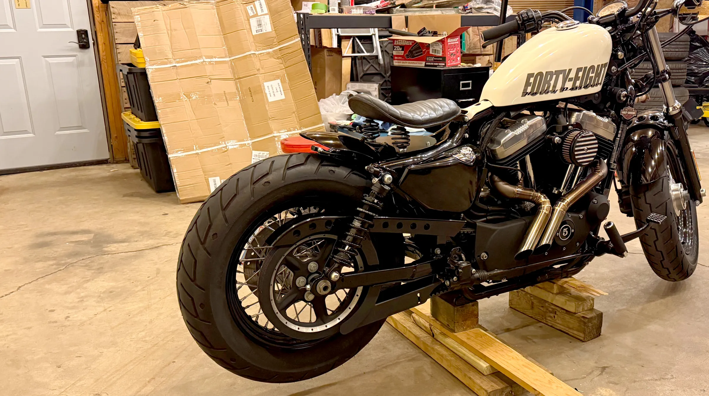
I started by cleaning up the space around the engine with a very short exhaust (yes, it’s also very loud and shoots flames), a smaller performance air cleaner, and a tank lift. With the increased airflow, came the need for tuning. What started as a mild 65 hp and 70 lb-ft of torque was transformed into roughly 98 hp and 120 lb-ft. With those performance gains, the bike needed some attention to handle the power more confidently, so I installed Ohlins rear shocks and fork springs, completely changing how the bike rides and feels.
While I liked the classic aesthetic of the stock bike, I wasn’t a fan of the stock lighting and fenders. The lights all felt dim and dated, both visually and from a safety standpoint. I upgraded the wiring and swapped in modern LED components: headlight, turn signals, and taillights, to create a cleaner, retro-modded look, especially at night. Then I chopped the rear fender, exposing the rear tire and giving the bike an aggressive cafe-style look.
This project has been one of the most rewarding experiences I’ve had. From getting hands-on with fabrication and mechanical work to actually riding something I built, it’s a different kind of satisfaction. But more than anything, I enjoy sharing it. Seeing friends light up after they ride it, or seeing strangers stop me to ask about it.
When dynamic desktops first launched on macOS, I loved the idea. I spend a lot of time on my computer for both work and personal projects, so adding a sense of life to the OS was a nice touch. However, Apple’s default dynamic wallpapers seem limited and impersonal, so I started exploring how I could create my own.
During that process, I came across a console app by Marcin Czachurski called wallpapper, on GitHub, which makes it straightforward to build custom dynamic wallpapers. The tool lets you take a sequence of images, configure timing and metadata, and export a .heic file that macOS can use as a fully functional dynamic desktop.
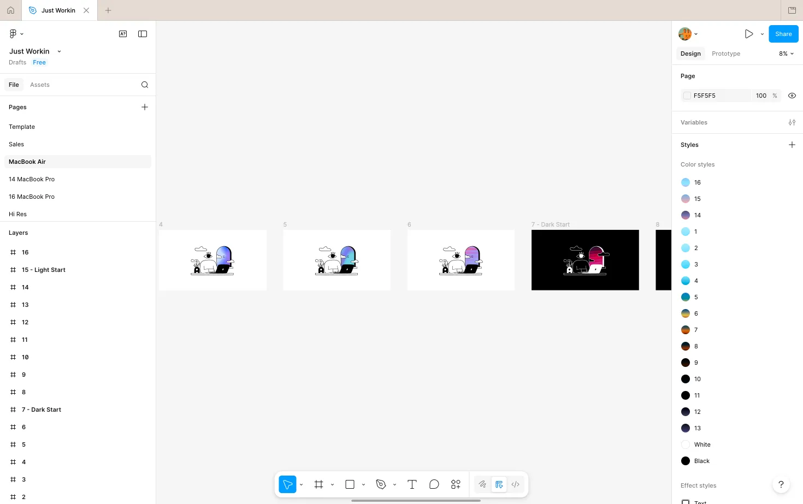
My workflow is simple: I design a series of frames in Figma, export them, run them through the console app to generate the final wallpaper, and test it locally. It’s a small project, but it’s a fun way to blend graphic design with a bit of technical tinkering, and it makes my workspace feel much more personal.
If you’re interested, I’d definitely recommend trying it yourself using Marcin’s wallpapper app, or checking out a few of the ones I’ve made here ;)
Since 2022, I’ve been part of the team evolving VisionLink™ from a basic telematics tool into a unified platform for construction, mining, and other heavy equipment industries. When I joined, the product was in the middle of a major rewrite with no design system, fragmented files across Sketch and Figma, a feature set with unclear ROI for customers, and a delivery process heavily dependent on meetings rather than shared standards.
Instead of trying to impose structure too early in my role, I focused first on stabilizing what already existed. I began by retrofitting a design system from production code and gradually reestablishing consistency across web, mobile, and machine interfaces. This reduced rework, cut down redundant alignment meetings, and gave the team a more reliable foundation to build on. I also helped introduce design sprints and workshops when our traditional agile process struggled under shifting priorities. These became crucial tools for efficiently aligning the teams. In just a few days of structured collaboration, we were often able to achieve what previously took months, helping the team make clearer decisions and ship with greater confidence.
Over time, I worked with the broader UX organization at Cat® to formalize a few lightweight design ops practices that brought more structure without adding unnecessary process. We introduced a clear way to intake work, reorganized our Figma spaces to better reflect how the team actually operates and scales, and established shared UX standards and regular design reviews. The real challenge was shaping these systems to fit the team’s culture and maturity so the new processes felt supportive rather than disruptive.
As our product’s strategy evolved, the design team and I worked to expand VisionLink™ beyond individual features and toward a more connected ecosystem. I was responsible for adding capabilities around equipment tracking, service planning, and job site coordination in ways that supported both Cat® owners and mixed fleets. These improvements contributed to a more usable and scalable information architecture, increased active usage, growth in connected assets, and clearer returns for customers through improved uptime and operational efficiency. At a broader level, simplifying workflows across services made it easier for customers to do business with Cat®, reinforcing both product adoption and aftermarket engagement.
Since 2022, I’ve been part of the team evolving VisionLink™ from a basic telematics tool into a unified platform for construction, mining, and other heavy equipment industries. When I joined, the product was in the middle of a major rewrite with no design system, fragmented files across Sketch and Figma, a feature set with unclear ROI for customers, and a delivery process heavily dependent on meetings rather than shared standards.
Instead of trying to impose structure too early in my role, I focused first on stabilizing what already existed. I began by retrofitting a design system from production code and gradually reestablishing consistency across web, mobile, and machine interfaces. This reduced rework, cut down redundant alignment meetings, and gave the team a more reliable foundation to build on. I also helped introduce design sprints and workshops when our traditional agile process struggled under shifting priorities. These became crucial tools for efficiently aligning the teams. In just a few days of structured collaboration, we were often able to achieve what previously took months, helping the team make clearer decisions and ship with greater confidence.
Over time, I worked with the broader UX organization at Cat® to formalize a few lightweight design ops practices that brought more structure without adding unnecessary process. We introduced a clear way to intake work, reorganized our Figma spaces to better reflect how the team actually operates and scales, and established shared UX standards and regular design reviews. The real challenge was shaping these systems to fit the team’s culture and maturity so the new processes felt supportive rather than disruptive.
As our product’s strategy evolved, the design team and I worked to expand VisionLink™ beyond individual features and toward a more connected ecosystem. I was responsible for adding capabilities around equipment tracking, service planning, and job site coordination in ways that supported both Cat® owners and mixed fleets. These improvements contributed to a more usable and scalable information architecture, increased active usage, growth in connected assets, and clearer returns for customers through improved uptime and operational efficiency. At a broader level, simplifying workflows across services made it easier for customers to do business with Cat®, reinforcing both product adoption and aftermarket engagement.
I’d rather talk like it’s 1999. If you’ve got something to say, send me an email. No feeds, no BS, just a real personal connection. (Punk's not dead, and neither is email.)
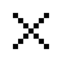
I’m a digital designer with over 10 years of experience in tech; blending craft, strategy, and curiosity to create meaningful, lasting work. Over the years, I’ve grown into a design leadership role, with experience guiding teams and large-scale initiatives across both startups and enterprise environments.
Early in my career, I worked in R&D labs, consultancies, and startups. I thrived on the energy and fast pace, but over time grew frustrated with the tech industry’s fixation on speed for the sake of capturing attention, and adding features that bloated products instead of providing lasting value. That shift in perspective led me to look beyond traditional tech for career growth. For the past three years at Cat®, I’ve been designing tools that help customers step away from their desks and into the environments where their work truly happens, tackling real-world challenges in business, construction, mining, and environmental impact and equipment management. This work has allowed me to take a different approach to software, one that keeps people off their devices and respects their time and attention.
Additionally, I’ve been building KIC - a design lab reimagining what technology could be if it prioritized lasting value, ethical thinking, and curiosity over constant output, instant gratification, and mass consumerism. My goal is to challenge how we approach building and using technology, questioning assumptions and exploring alternatives that better serve people, communities, and our environment.